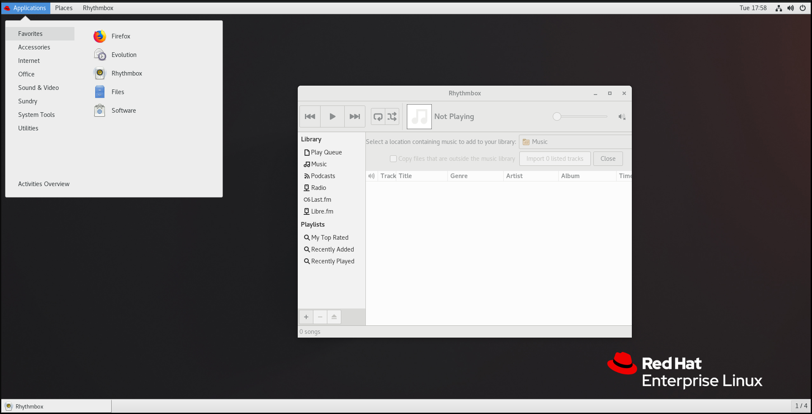
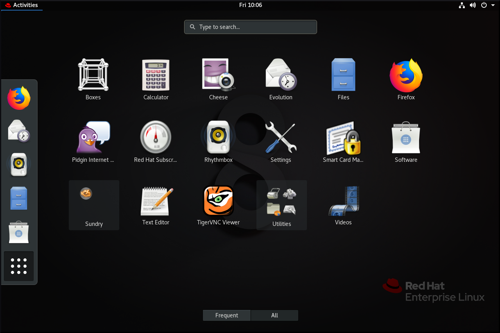
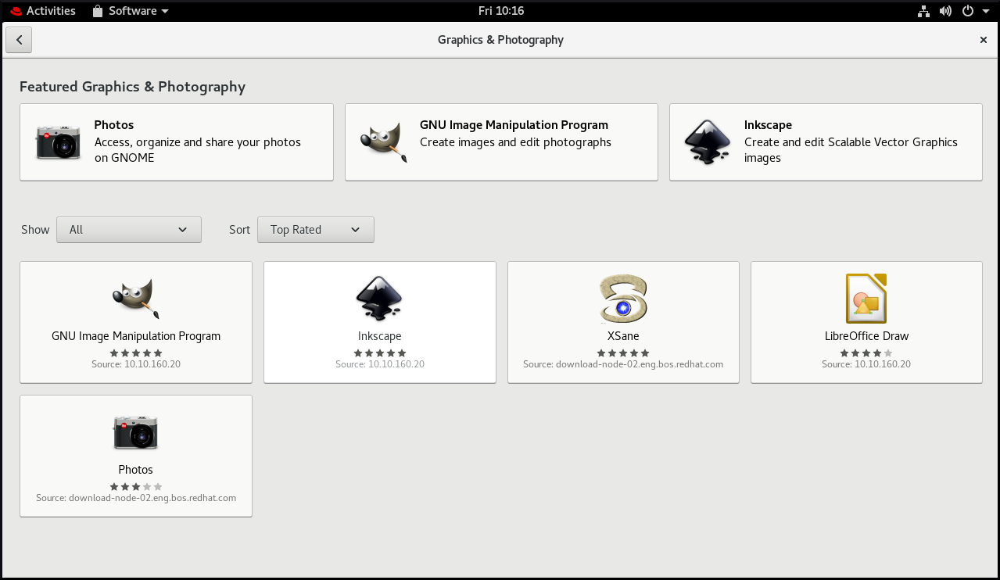
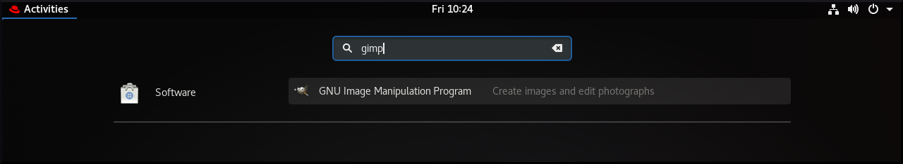
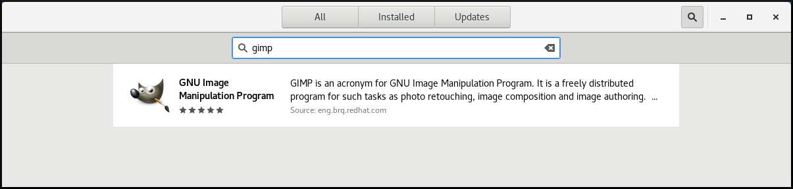
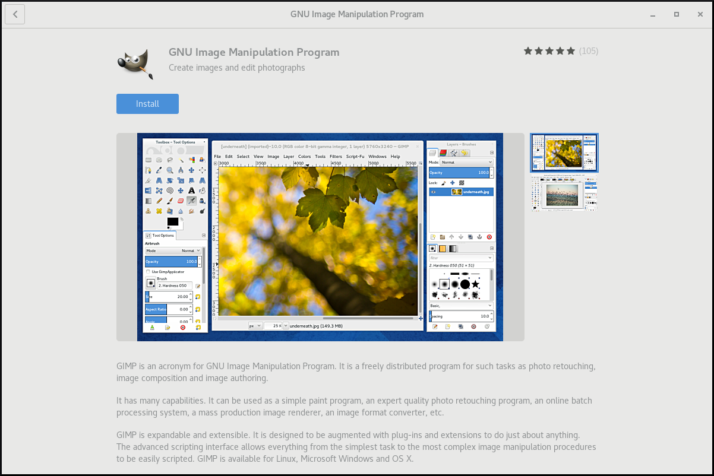
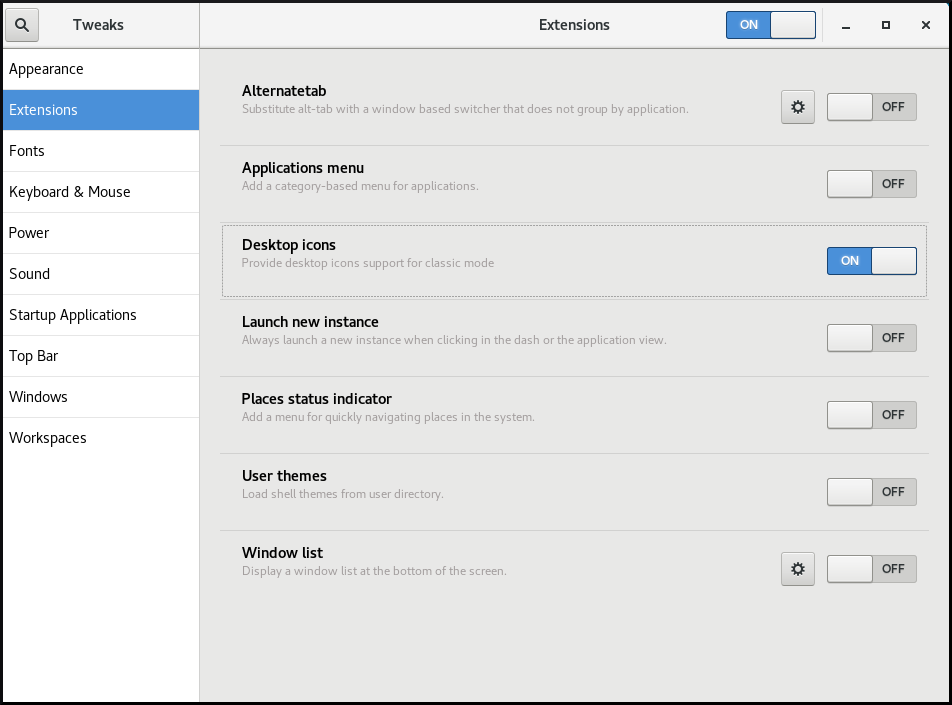
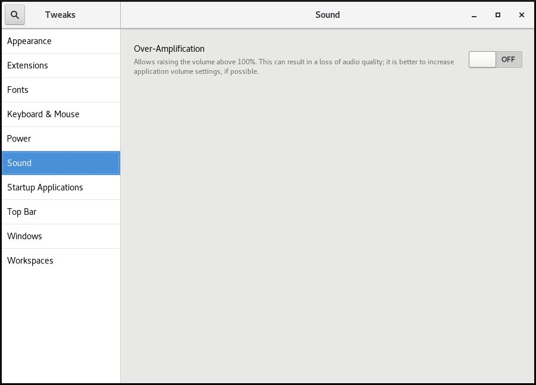
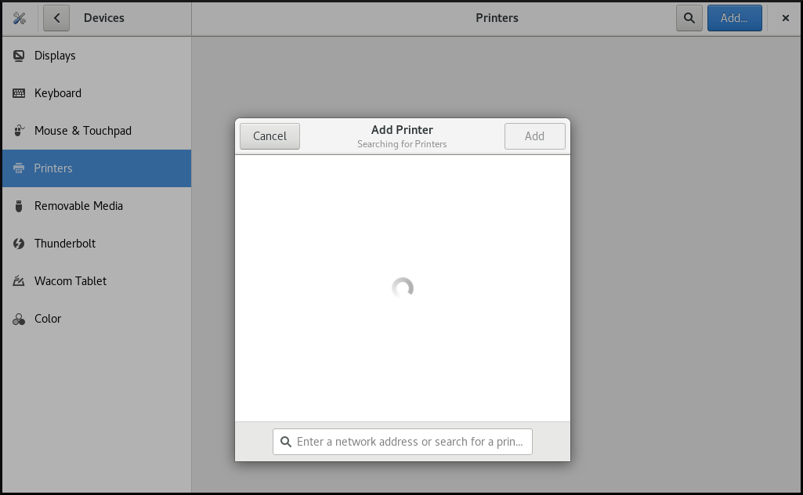

Chapter 9. 开始使用GNOME
Red Hat Enterprise Linux 8附带默认桌面环境GNOME 3。
GNOME 3表示一个表示层，它提供图形用户界面以及集中的工作环境，使您可以从一个位置访问所有工作。
GNOME 3提供了两个基本环境：
两种环境都可以使用两种不同的协议来构建图形用户界面：
- X11协议，使用X.Org作为显示服务器。
Wayland协议，使用GNOME Shell作为Wayland合成器和显示服务器。
显示服务器的这种解决方案在Wayland上进一步称为GNOME Shell 。
注意
请注意，基于Wayland协议的图形不适用于使用qxl驱动程序的虚拟机。
您可以在/usr/lib/udev/rules.d/61-gdm.rules文件中找到基于Wayland的图形不可用的当前环境列表。
Red Hat Enterprise Linux 8中的默认组合是GNOME标准环境，使用Wayland上的GNOME Shell作为显示服务器。
但是，由于“Current Wayland限制”一节 ，您可能希望切换图形协议栈。
您可能还希望从GNOME Standard切换到GNOME Classic。
有关基于Wayland协议的图形的更多信息，请参阅“Wayland和X11协议之间的主要差异”一节 。
有关如何切换环境的信息，请参阅选择GNOME环境 。
GNOME标准用户界面包括以下主要组件：
顶吧屏幕顶部的水平栏提供对GNOME标准的一些基本功能的访问，例如
Activities Overview，时钟和日历，系统状态图标和system menu。系统菜单system menu位于右上角，可让您：- 更新设置
- 控制条形音箱
- 查找有关Wi-Fi连接的信息
- 切换用户
- 注销
- 关闭电脑
活动概述Activities Overview具有窗口和应用程序视图，允许用户运行应用程序和窗口并在它们之间切换。顶部的
search entry允许搜索桌面上可用的各种项目，包括应用程序，文档，文件和配置工具。左侧的垂直条包含收藏和正在运行的应用程序列表。您可以根据需要在默认的收藏夹列表中添加或删除应用程序。
右侧显示的工作区列表允许用户在多个工作区之间切换，或者将应用程序和窗口从一个工作区移动到另一个工作区。
消息托盘message tray提供对待处理通知的访问。message tray显示用户按下Super+M。

GNOME Classic为喜欢更传统桌面体验的用户提供了一种模式，类似于Red Hat Enterprise Linux 6使用的GNOME 2环境。它基于GNOME 3技术，同时包含与GNOME 2类似的多个功能。
GNOME Classic用户界面包含以下主要组件：
应用和场所“
Applications菜单显示在屏幕的左上角。它使用户可以访问按类别组织的应用程序。用户还可以从该菜单打开“Activities Overview。的
Places旁边的菜单显示Applications菜单顶部栏上。它使用户可以快速访问重要文件夹，例如Downloads或Pictures。任务栏taskbar显示在屏幕底部，并具有以下功能：- 窗口列表
- 窗口列表旁边显示的通知图标
- 当前工作空间的短标识符和通知图标旁边显示的可用工作空间总数
四个可用的工作空间
在GNOME Classic中，默认情况下，用户可用的工作空间数设置为4。
最小化和最大化按钮
GNOME Classic中的窗口标题栏具有最小化和最大化按钮，可让用户快速将窗口最小化到窗口列表，或最大化它们以占用桌面上的所有空间。
传统的
Super+Tab窗口切换器在GNOME Classic中，
Super+Tab窗口切换器中的窗口不按应用程序分组。系统菜单system menu位于右上角，可让您：- 更新设置
- 控制条形音箱
- 查找有关Wi-Fi连接的信息
- 切换用户
- 注销
- 关闭电脑

Red Hat Enterprise Linux 8的默认桌面环境是GNOME Standard， Wayland上的GNOME Shell作为显示服务器。
但是，由于“Current Wayland限制”一节 ，您可能希望切换图形协议栈。
您可能还希望从GNOME Standard切换到GNOME Classic。有关这两种环境之间的差异，请参阅“GNOME环境”一节 。
要在GNOME环境和图形协议堆栈的各种组合之间切换，请使用以下过程。
程序
在登录屏幕（GDM）中，单击“ 登录”按钮旁边的齿轮。
注意
您无法从锁定屏幕访问此选项。首次启动Red Hat Enterprise Linux 8或退出当前会话时，将显示登录屏幕。

从显示的下拉菜单中，选择您喜欢的选项。
注意
请注意，在登录屏幕上显示的菜单中， X.Org显示服务器被标记为X11显示服务器。
重要
上述过程导致的GNOME环境和图形协议堆栈的更改在用户注销之间以及关闭或重新启动计算机时都是持久的。
本节介绍了可用于在GNOME 3中启动可用应用程序的各种方法。
程序
- 按
Alt+F2Enter a Command屏幕。 将可执行文件的名称写入“
Enter a Command屏幕：
这种方法适用于GNOME标准和GNOME Classic环境。
程序
在GNOME标准版中，转到“
Activities Overview，然后单击左侧垂直栏中的“Show Applications图标。请注意，您可以使用屏幕底部的
Frequent/All开关在显示全部应用程序或仅显示频繁应用程序之间进行选择。或者，您也可以在
search entry键入所需应用程序的名称。
程序
- 在GNOME Classic中，转到“
Applications菜单。 从其中一个可用类别中选择所需的应用程序。
可用的类别包括：
- 最爱
- 饰品
- 互联网
- 办公室
- 声音和视频
- 各种各样的
- 系统工具
- 公用事业
程序
- 打开一个终端。
- 在命令行上键入所需应用程序的名称。
这种方法适用于GNOME标准和GNOME Classic环境。
本节介绍可用于在GNOME 3中安装新应用程序的各种方法。
程序
使用启动应用程序中描述的方法之一来启动GNOME软件。
注意
GNOME软件是一个实用程序，它允许您通过图形环境安装和更新应用程序和gnome-shell扩展。该实用程序基于PackageKit技术，后者作为其后端。GNOME软件主要提供桌面应用程序，这些应用程序包含
*.desktop文件。可用的应用程序根据其用途分为多个类别。从其中一个可用类别中选择要安装的应用程序。
- 音频视频
- 传播与新闻
- 生产率
- 图形和摄影
- 附加组件
- 开发者工具
公用事业

单击所选的应用程序，然后单击“ 安装”按钮。


注意
附加组件包括例如GNOME Shell扩展，编解码器或字体。
程序
- 开始打开与系统上当前未安装的应用程序或应用程序关联的文件。
- GNOME将自动识别可以打开文件的合适应用程序，并提供下载应用程序的功能。
程序
- 下载所需的rpm包。
在Nautilus文件管理器中打开包含下载的rpm的目录。
注意
默认情况下，下载存储在
/home/user/Downloads目录中。- 双击rpm的图标进行安装。
程序
开始在
search entry键入所需应用程序的名称。
GNOME将自动在相应的存储库中找到该应用程序，并将显示该应用程序的图标。
单击自动显示的应用程序图标以打开GNOME软件。

再次单击应用程序的图标，然后按照上述说明在GNOME软件中完成安装。

程序
- 打开一个终端。
使用所需应用程序的名称运行
yum install命令：~]# yum install <application_name>
在RHEL 8中，Nautilus文件管理器不再提供桌面图标功能，而是通过gnome-shell-extension-desktop-icons包中提供的desktop icons gnome-shell扩展。
GNOME经典中的桌面图标
GNOME Classic环境默认包含gnome-shell-extension-desktop-icons包。桌面图标始终打开，无法关闭。如果要为文件创建桌面图标，只需将此文件放入/Desktop目录，即可自动显示图标。
GNOME标准中的桌面图标
如果您只有GNOME标准环境，而不是GNOME Classic，则必须安装gnome-shell-extension-desktop-icons 。
安装软件包后，您可以使用Tweaks应用程序打开或关闭桌面图标：
转到“ 调整” ，选择“
Extensions-Desktop icons，然后将其打开。
- 将所需文件放入
/Desktop目录，桌面上会自动显示图标。
在Red Hat Enterprise Linux 8中，声音由PulseAudio声音服务器处理，该声音服务器允许程序使用Pulseaudio守护程序输出音频。
有关PulseAudio的更多信息，请参见pulseaudio手册页。
要处理声音，您可以在GNOME中使用这两个图形应用程序之一：
-
系统菜单 -
Tweaks工具 -
GNOME控制中心
System menu位于右上角，它只允许您设置声音输出的强度或通过条形音箱输入的声音。只有在运行应该使用iternal麦克风（内置音频）的应用程序（如某些电话会议工具）时，才能使用输入声音的条形音。

Tweaks工具仅允许您配置过放大。

GNOME Control Center提供了更多配置声音的选项。您可以使用启动应用程序中描述的方法之一启动此工具。此外，您还可以通过单击其图标从“ System menu启动它。

当GNOME Control Center打开时，从左侧垂直条中选择“ Sound ”。

通过GNOME Control Center - Sound ，您可以配置以下内容：
-
Output声音 -
Input声音 -
声音特效 -
应用
Output和Input菜单仅显示内置音频设备，除非您连接任何可以处理声音的外部设备。
使用“ Output菜单，您可以根据可用的输出设备从可用的模拟或数字配置文件中选择所需的配置文件。
“ Applications菜单显示可以处理声音的所有当前正在运行的应用程序，并允许您放大或降低特定应用程序的声音。
GNOME Shell提供了多种工具来处理图形和摄影。
您可以在GNOME软件的Graphics & Photography菜单下查看可用的工具：
打开GNOME软件。

- 去
Graphics & Photography。
可用的工具包括：
相片用于访问，组织和共享照片。
GNU图像处理程序用于创建图像和编辑照片。
Inkspace用于创建和编辑可缩放矢量图形图像。
的Xsane用扫描仪扫描图像。
LibreOffice Draw用于创建和编辑图纸，流程图和徽标。
在GNOME Shell中，可以使用GNOME Control Center GUI设置打印。
程序
使用“启动应用程序”一节中描述的方法之一启动GNOME控制中心 GUI。
此外，您还可以通过单击“设置”图标从右上角的系统菜单启动GNOME控制中心。
- 出现GNOME控制中心 GUI时，请转到：
Devices → Printers
本节介绍如何使用GNOME Control Center GUI添加新打印机。
先决条件
为了能够使用GNOME控制中心 GUI添加新打印机，您必须单击顶部栏右侧显示的Unlock ，并作为以下用户之一进行身份验证：
- 超级用户
- 具有
sudo提供的管理访问权限的任何用户（在/etc/sudoers列出的用户） - 属于
/etc/groupprintadmin组的任何用户
程序
打开添加打印机对话框。

选择一个可用的打印机（包括网络打印机），或输入打印机IP地址或打印机服务器的主机名。

本节介绍如何配置新打印机，以及如何使用GNOME Control Center GUI维护打印机配置。
显示打印机的设置菜单
程序
- 单击右侧的“设置”按钮以显示所选打印机的设置菜单：

显示和修改打印机的详细信息
程序
- 单击
Printer Details以显示和修改所选打印机的设置：

使用此菜单，您可以：
搜索驱动程序GNOME控制中心与PackageKit进行通信，以搜索适用于可用存储库的合适驱动程序。
从数据库中选择此选项使您可以从已安装在系统上的数据库中选择合适的驱动程序。
安装PPD文件此选项使您可以从可用作打印机驱动程序的可用postscript打印机描述（PPD）文件列表中进行选择。
设置默认打印机
程序
- 单击“
Use Printer by Default默认打印机”将所选打印机设置为默认打印机：
卸下打印机
程序
- 单击
Remove Printer以删除所选的打印机：

红帽企业Linux 8包括PipeWire媒体服务器，可确保访问多媒体设备和应用程序之间的媒体共享。
在Wayland上的GNOME Shell上运行远程桌面会话时，使用PipeWire和VNC服务器。远程桌面会话的功能由gnome-remote-desktop和pipewire包提供。
在X.Org上 ，只需要VNC即可运行远程桌面会话。X.Org上的此功能由vino包提供。
在Wayland上的GNOME Shell上运行时，PipeWire也可用于电子会议工具，例如BlueJeans。在这种情况下，当您开始在电话会议工具中共享屏幕时，会自动激活pipewire service 。
要检查pipewire service的状态，请运行：
~]$ systemctl --user status pipewire
您可以使用“ 调整”工具为特定用户自定义GNOME Shell环境。
要打开Tweaks ，请使用“启动应用程序”一节中描述的方法之一。
要选择要自定义的项目，请使用左侧的垂直菜单。例如，您可以选择在使用“ Statup Applications菜单登录时自动启动的Statup Applications ，也可以使用“ Top Bar菜单自定义顶栏外观。